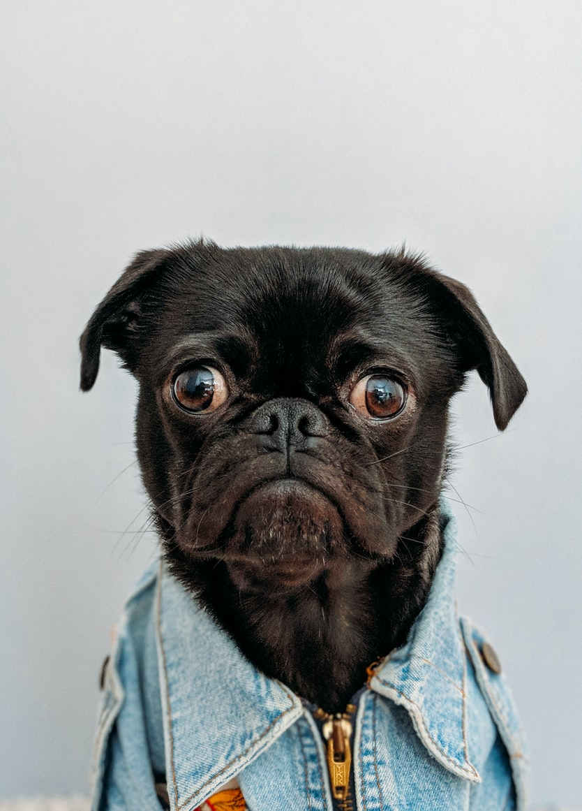
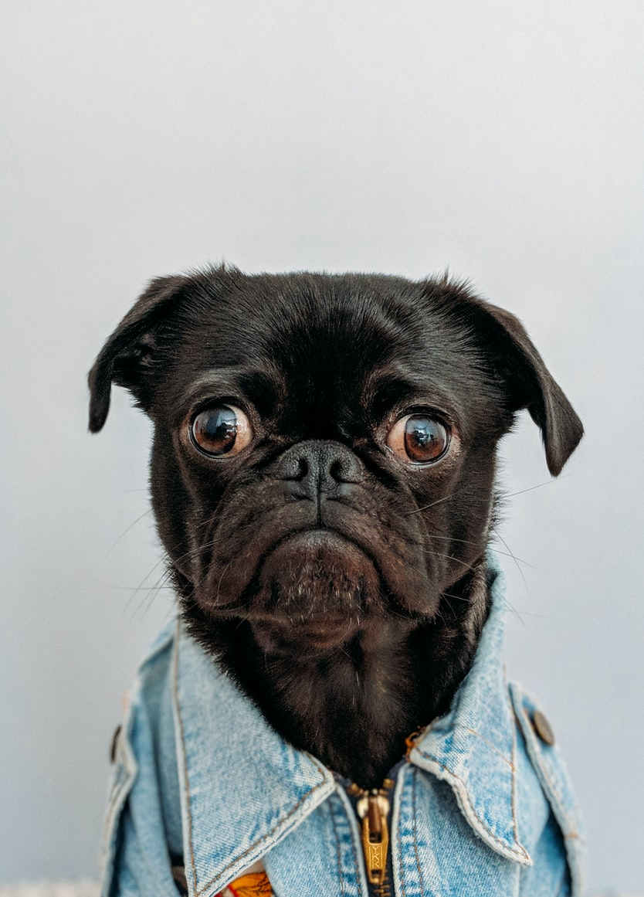
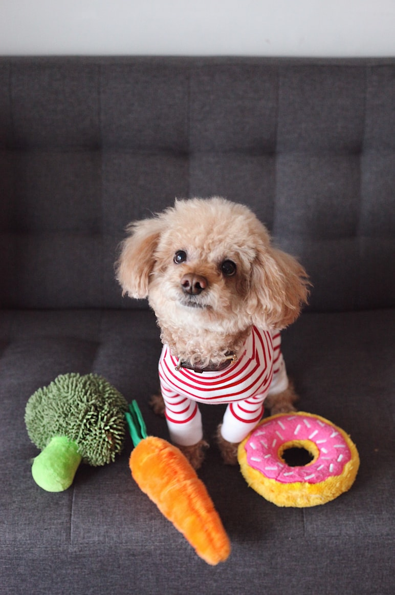
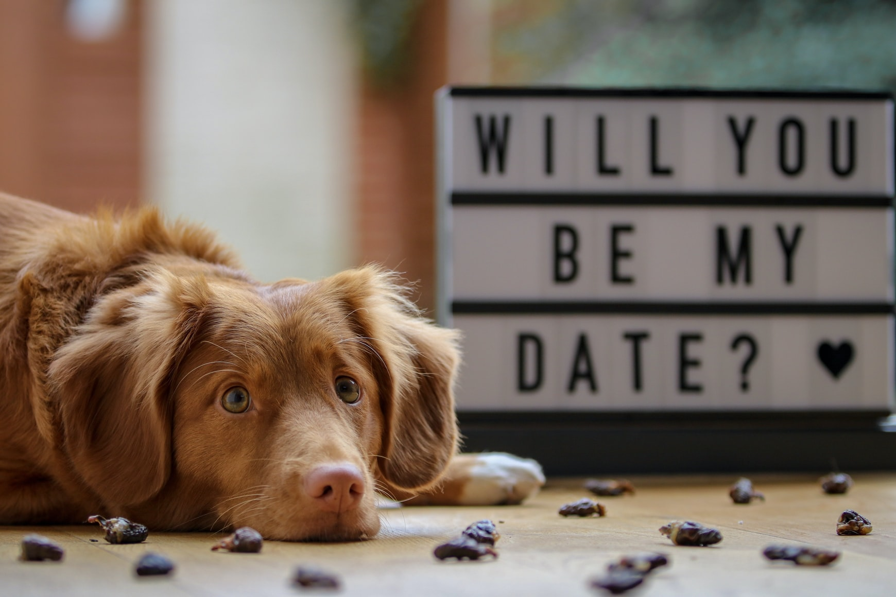
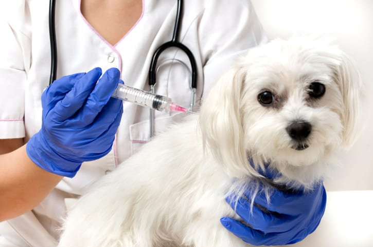
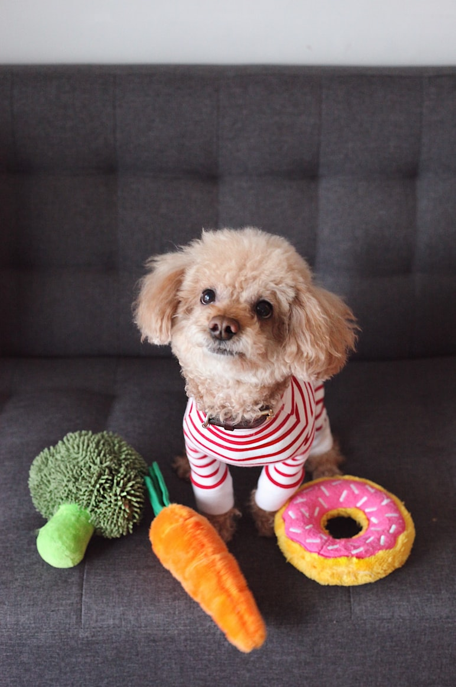
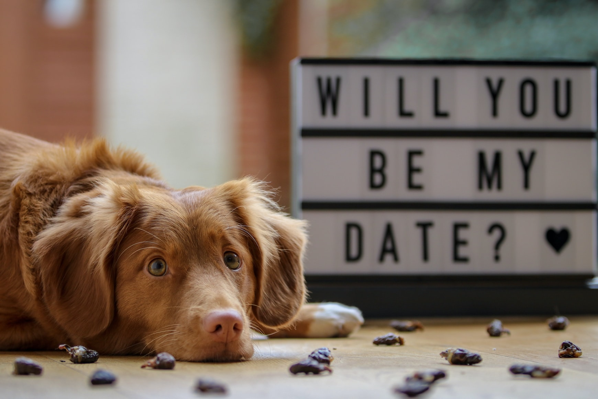
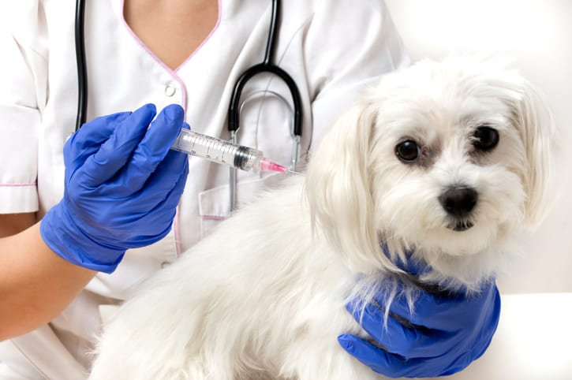

WELCOME TO OUR PHOTO CATALOG
WE ARE ONE BIG FAMILY


 



 







Our Services
Noko Nice is a locally owned and operated pet store. Our mission is to provide dog and cat parents with everything that they need to ensure their pet lives a long and happy life. We love to talk about pets of all types and we are even more excited when you bring your furry family member into the store to meet us! We are constantly researching and learning about new products that can make our pets lives better. we look to serve all Dog and Cat owners in the surrounding areas by offering a local, low cost alternative to the "Big Box" pet stores. We have the best Vetinary services and also carry over 18 brands of Dog/Cat foods, including most major brands.We also have access to many brands that are not on our shelves so, if you don't see what you are looking for, please ask about special ordering! We also have an extensive selection of toys, treats, grooming supplies, supplements and outdoor supplies that dog or cat owners may need. Our doors opened for the first time on September 22, 2014 and we have been growing ever since. Thanks again for visiting our site and learning about our company! We will see you soon. Our goal is to provide a clean, pet friendly store that has everything that your dog or cat needs
GROOMING
Grooming your dog is an important part of a dog's overall health. Nails that are too long can shift a dog's posture and create structural problems down the line and teeth that have never seen a brush can be lost. Not to mentioned that a matted, unruly coat can cause many health issues. So make sure your pooch is feeling happy and healthy with a nice new do from our talented groomers!
VACCINES
Vaccines are possible when the resources allow us to distribute the rabies vaccine to pets and stray animals; we also deworm cats and dogs in the community.We do not want a scared dog to bite a person and infect them if the dog has the rabies virus. In addition, we do not need a group of dogs to get infected.Stray dogs are victims of dog attacks; they fight for food, and playtime turns into hostility. They get hurt or can get infected with other dog's viruses
TRAINING
we are dedicated to providing local dog obedience training that will be beneficial to both you and your pup. Our reliable dog training company in Cincinnati will help you develop a bond with your dog through positive training services focused on developing social skills, problem solving and obedience. Your dog is constantly learning, especially as a puppy, which is why it’s important to begin training with us today. At the Cincinnati Dog Wizard, we can provide the thorough dog obedience programs that you and your pup will enjoy and grow from.
DAYCARE
If your dog is restless, lonely, or just plain bored; quality daycare is a wonderful solution. Pet Nation Lodge is a safe and inviting place for dogs to get that extra affection and stimulation they need. In addition to that, our team is practiced at accommodating a wide spectrum of animal dispositions. We understand that every dog is unique in their own special way, so we create a specialized environment that will best suit your pet's needs.
BOARDING
Whether it's one night, one week, or even a month, your pet will enjoy our boarding facility! Our focus is keeping your dog safe, healthy, and happy. We have very spacious lodges for each and every type of pooch. During the day each dog is treated as one of our Daycare Dogs. Allowing them to play, run, and interact with various other dogs of a similar temperament and size.
DOG WALKINGS
You can't always predict a super busy day at work, but you can anticipate your dog's needs. Instead of rushing home at lunch, book a dog walker to give your dog a 30- or 60-minute dog walk. Your dog walker can stop by as many times as you need—on whatever days you need them.